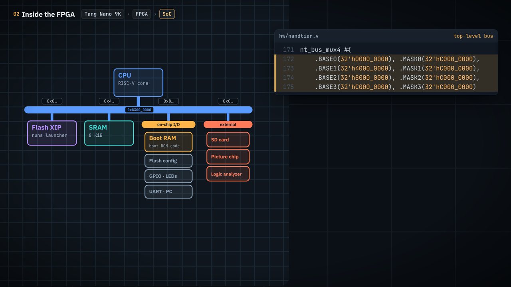

SoC architecture
NandTier is one RV32IM CPU on one system bus. The top bits of every address pick one of four regions (flash, SRAM, on-chip I/O, external devices), and each region decodes further. Software and hardware share one memory map, written in Verilog in hw/nandtier.v and in C in fw/include/nandtier.h.

Address map
| Address | Size | Device |
|---|---|---|
0x0000_0000 |
8 MiB | SPI flash, execute in place, through a 4 KiB read cache |
0x4000_0000 |
8 KiB | SRAM |
0x8000_0000 |
8 KiB | boot RAM: the boot ROM and the reset vector |
0x8100_0000 |
4 B | SPI flash config and bit-bang register |
0x8200_0000 |
12 B | GPIO |
0x8300_0000 |
8 B | UART |
0xC000_0000 |
16 B | SD card SPI port |
0xC100_0000 |
24 KiB | picture processing unit (PPU) |
0xC200_0000 |
64 B | on-chip logic analyzer |
Accesses to unmapped addresses complete at once and read 0.
The bus protocol
Every device follows the same simple handshake:
mem_validstays high untilmem_ready, with the address and data held stable.mem_addris word aligned;mem_wstrbis zero for reads;mem_instrmarks instruction fetches.- After every transfer,
mem_validis low for at least one cycle.
A device that needs time simply holds mem_ready low, and the CPU waits. That is how the flash controller, the cache and the UART add wait cycles without any extra logic in the CPU.
Source layout
| Folder | Contents |
|---|---|
hw/core/ |
the CPU stages: fetch, decode, execute, ALU, load/store, control |
hw/bus/ |
the address decoder |
hw/mem/ |
boot RAM and SRAM |
hw/periph/ |
UART, GPIO, SPI flash and its cache, SD SPI, logic analyzer, reset |
hw/video/ |
HDMI timing, the PPU, the text terminal, the font, TMDS encoding |
boards/ |
per board: top level, clocks, pins, constraints |
fw/ |
boot ROM, launcher, game SDK and games, in C |
sw/ |
host tools: flash programmer, cartridge packer, keyboard controller |
test/, sim/ |
the test suite and the whole-SoC simulation |
FPGA resources on the Tang Nano 9K
Gowin synthesis and place-and-route of the whole SoC on the GW1NR-9C:
| Resource | Used |
|---|---|
| Logic | 5213 / 8640 (61%) |
| Registers | 2527 / 6693 (38%) |
| Block RAM | 26 / 26 (100%) |
| DSP | 1 MULT36X36 |
| PLL | 1 / 2 |